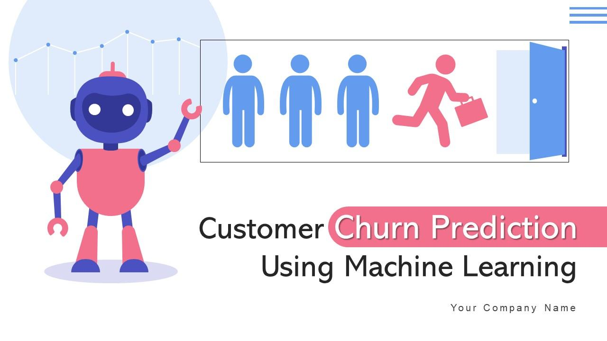
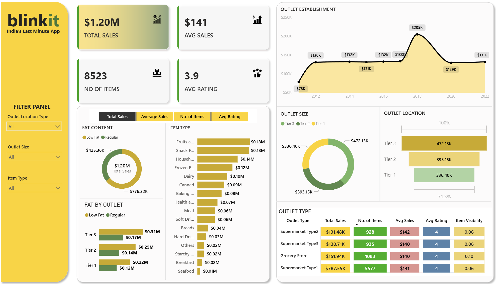

This project set out to help decision-makers in the restaurant industry make smarter, data-driven
investment choices. By studying customer reviews and business performance data, we identified
which restaurants are most likely to succeed over the long term and deliver strong returns on
investment. Our goal was to turn complex data into clear, actionable recommendations that could
be implemented right away.
Analyzed 2018 Divvy bike-share data in Tableau, joining weather and station datasets to uncover usage patterns, busiest times, and top stations. Built dashboards to help management optimize bike placement and operations decisions.
Developed a heart disease prediction system using the Cleveland dataset. Built and evaluated Logistic Regression, Decision Tree, Random Forest, and SVM models (up to 92% accuracy) and applied KMeans clustering to uncover hidden risk groups, turning complex data into actionable insights.
This project explores predictive modeling of Boston housing prices using a data-adaptive framework, comparing Multiple Linear Regression, Gaussian Process Regression, and Neural Network Regression, all evaluated with 10-fold cross-validation.
Tableau Dashboards.

Machine learning project predicting customer churn with feature engineering,
class imbalance handling (SMOTE, scale_pos_weight), hyperparameter tuning, and
model interpretability using SHAP. Compared models including Gradient Boosting and XGBoost.

Designed an interactive Power BI dashboard analyzing Blinkit sales and customer insights.
Identified key trends in revenue, customer demographics, and product preferences
to enable data-driven decisions for improving sales performance and customer retention.